Quilling is amazing...when I discovered it ...I went crazy... so many design possibilities... just
with paper!
If you haven't got into quilling... I recommend you try it... you will love it!
Try that and try out these cards too...... I'm sure whoever you give it to will appreciate
it as it can also be turned in to wall art!
Step 1: Basic Shapes For This Tutorial
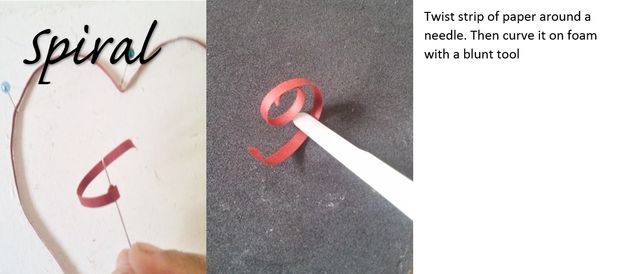
Step 2: Petal Hearts!
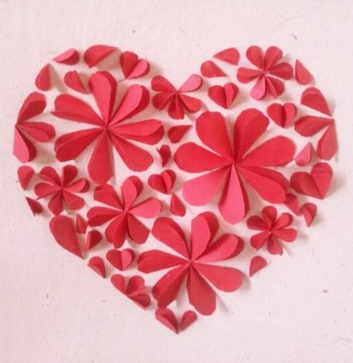
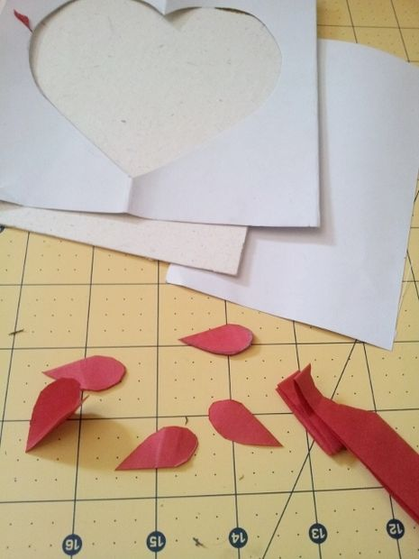
This is my favorite...but a bit time consuming in cutting the hearts :-)
Fold Cardboard in half and draw and cut template of heart. Keep the heart... you would need it for the next project.
Pin the outline template to your card or tape it down.
If you have 3-4 sizes of heart punches...you can use it to cut out various hearts and then fold them in two...making a petal shape.
If you don't have punches...so fuss! simply fold paper in half, draw your heart...then fold lengthwise so that you can cut about 4-5 hearts in one go.
When I find an easy way...I do it ;-) haha.
I had the smallest heart puncher...so I used that and then using that as a guide I made templates of larger hearts to draw on the paper.
First fill in the largest petals. Place the largest heart petals in the shape of a flower...making sure the open flap goes in the same direction.
Now fill in with the second largest heart petal. Gradually move to the smallest heart petal.
While filling up make sure you take in the shape of the heart outline with the the petals being placed strategically :-)
Now fill up the gaps with petals formed in hearts and single petals . That's it!
Step 3: Swirl Me A heart!
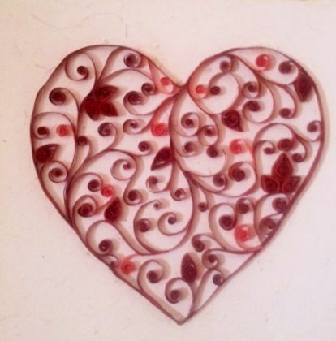
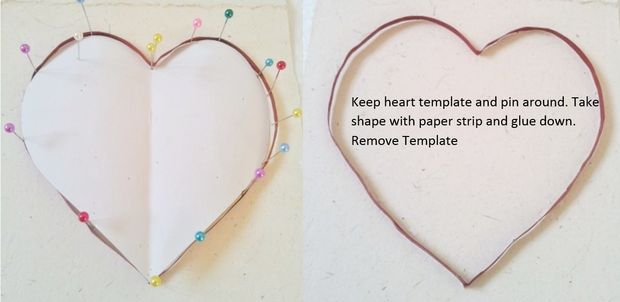
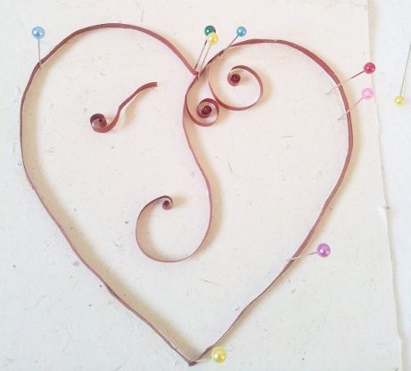
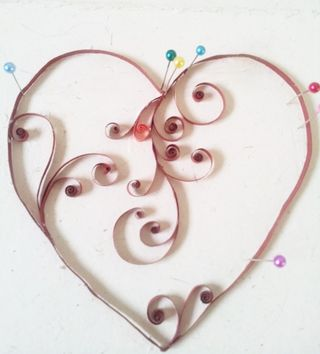
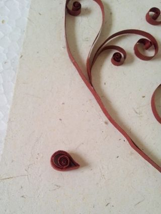
I love swirls A heat with swirls?? like it? Try it!
All instructions are pretty basic and so simple.
Make the swirls and petals as per instructions in the basic shapes.
Pin the heart template you cut out in the earlier step to your card. Use pins to take the shape of the card and wrap your paper strip around it taking the shape. Glue it down at the the bends and in the curves.
Now place your scrolls randomly in the heart. Try and fill up as much as possible. Insert the petals also according to my picture or where you would like it. Add bright red swirls randomly too to give it an extra color.
You could also add small gem stones on the petals. But I opted out of it.
That is it! Please if you make some, I would like to see your version of it. Any questions you have, don't hesitate to ask! I would love to answer.
Also don't forget to vote! :-D
Thanks for reading :-)
How to make a Kirigami Pop Up Ballerina Greeting Card!
Inspired by Hari & Deepti, my friend and I decided to make a romantic Zelda + Link paper cut
shadow box (silhouette box? back lit box? whatever these things are called) for a neato
personal birthday present! (Also makes a perfect wedding gift.) Mounted on a wall, or
sitting on a desk, it provides a fair amount of glow and looks pretty cool too.
Basically, paper cut-outs are layered on each other in a box with a glass frame. A light
source goes behind the cut outs, and makes each layer glow. Generally, the more layers,
the cooler the effect! I'll show how I made this shadow box, providing tips here and there.
Feel free to give some input and tips (first instructable).
(This instructable may involve sharp tools, nails and hot glue. If you're underage, this is
a great project to do with your parents.)
Let's get started!
Step 1: Materials
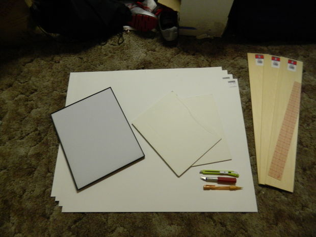
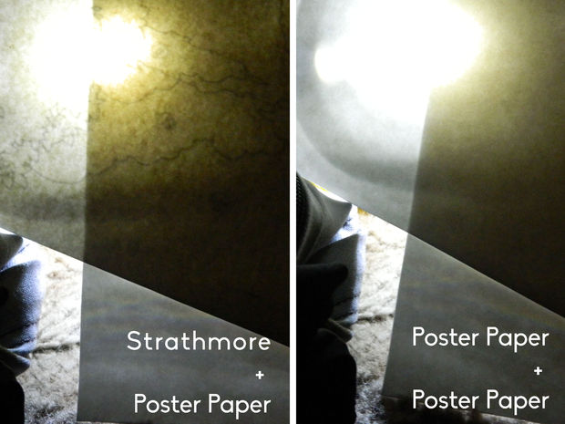
Here's what you may need (be creative!):
Ruler
Cutting device(box cutter, exacto knife, laser cutter... etc. Make sure it's sharp and precise, unless you don't care about torn edges!)
Pencil
Eraser
Blue tape/lint roller (to pick up on any stray lint/pet hair)
Paper Cutouts:
Foam paper (for spacers)
White card stock paper *
Tracing/carbon paper (or a printer)
Tissue paper (for water layers)
Laminating sheets (orstiffening agent for tissue paper)
Box:**
A Glass/plastic panel (ie. picture frame, plexiglass, etc)
Wood
Wood Glue
Decorative paper/spray paint
Sandpaper
Hot Glue/Sealant (optional)
Clamps (optional)
Nails/screws
Picture mounting kit(if hanging)
Bubble level (optional) (app: ipad/android)
Lighting:
LED strip lights*** (White /RGB)
Power adapter
Twisty ties/ string
Wall hook/hanging device (eg. staples, hooks, bent nails, etc)
Laminating sheets (orstiffening agent for tissue paper)
A few things to consider:
*Type of cardstock
Different paper weights and surface textures give off slightly different effects. You might
end up weirdo-creeping, but experiment by shining a light behind papers! If you can't
(or won't), get anything stiff enough to keep a shape, like poster paper or Strathmore 400
Series Mixed Media Pads (unjust comparison shown in pic).
**Box size
We wanted something large for a bare wall, like a 11x14 inch photo frame. We had to make it
from scratch. You can always buy pre-made boxes, like shadow boxes!
***Type of lighting
You may or may not want multiple colors (eg. multi-color LEDs can make a noticeable
difference when you're attempting white, because 3 separate colors combine to produce
white. Makes a neat aurora borealis/rainbow though!). Brighter lights may also make for
a more uniform light.


 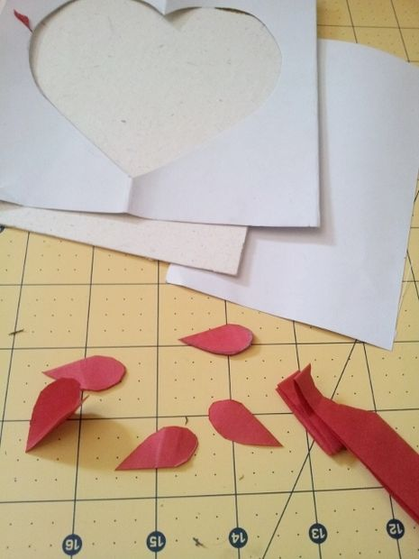
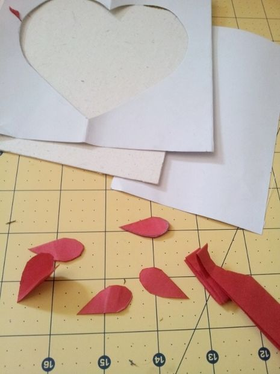


 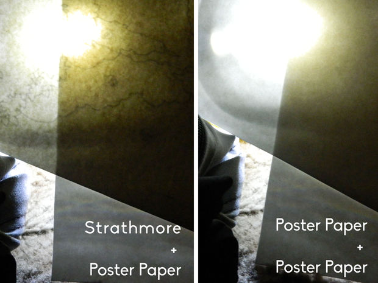
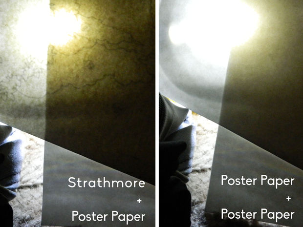


 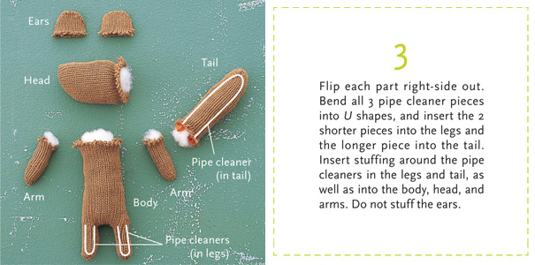
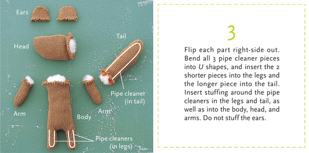
 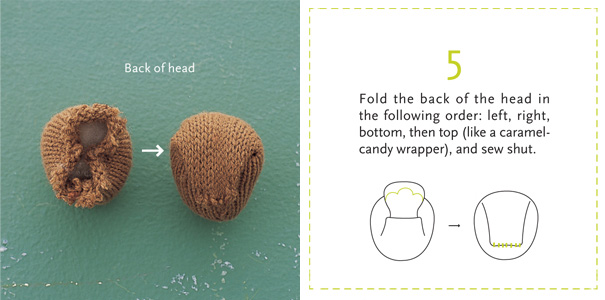
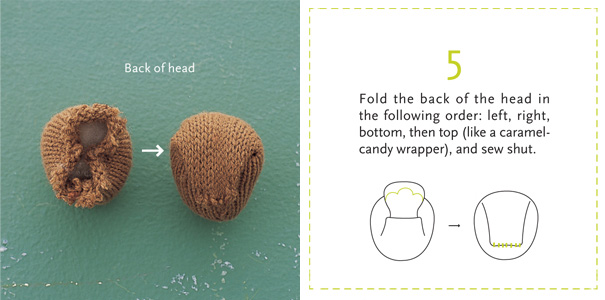

 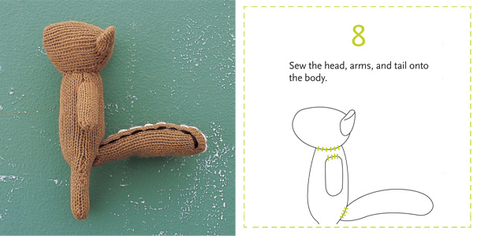
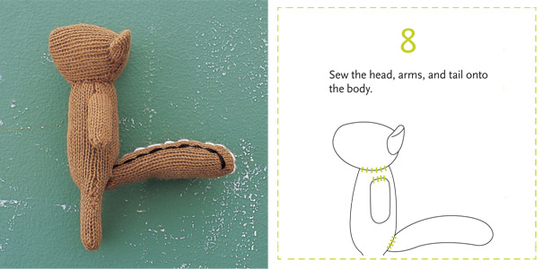